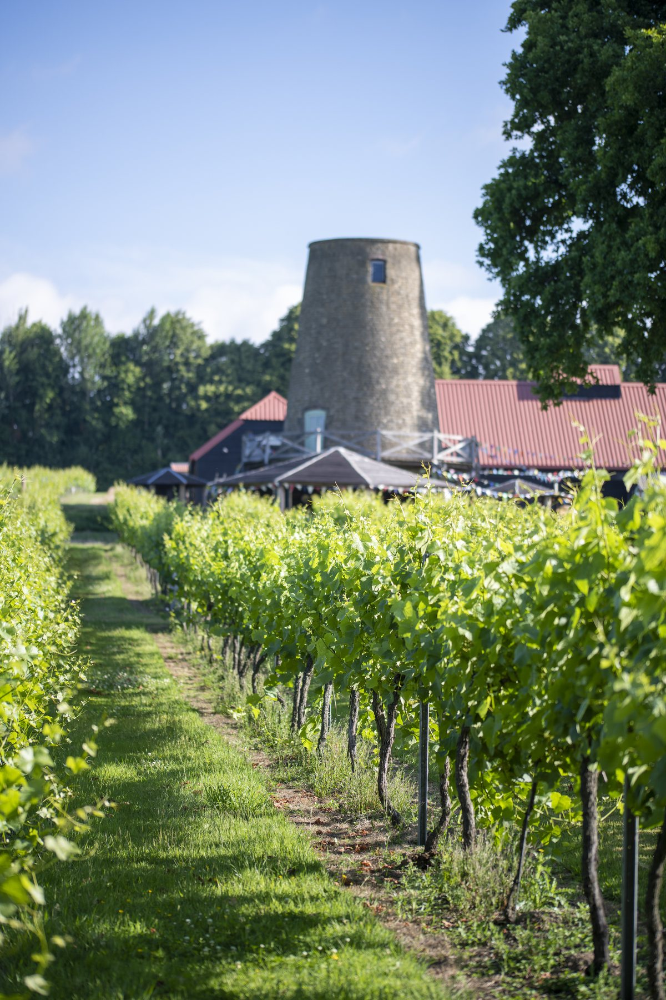
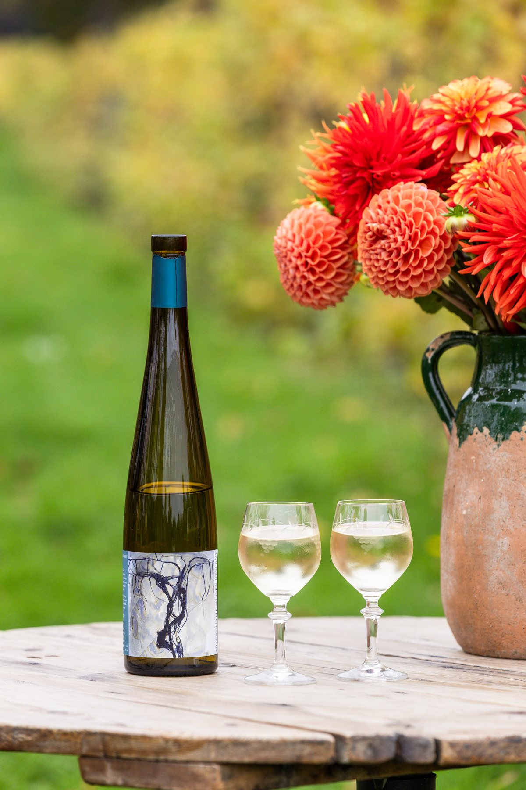

Horsham & the Arun Valley
Nutbourne Vineyard
One of the few Sussex estates you can simply turn up to: a free self-guided trail with an illustrated map, a windmill that’s free to enter, and vines planted in 1979 still going.


The visit
Nutbourne works two ways. Turn up on any opening day and walk the vines for free with a map in hand, or book onto a Saturday morning tour and tasting through the season. Most Sussex estates only offer the second.
Free self-guided trail, six days a week
Whenever they’re open — Monday to Saturday, 10am to 5pm — you can come by and follow the self-guided trail through the vines with an illustrated map. No booking, no charge. The windmill is open and free to enter too.
Tours are Saturday mornings, £35pp
Guided tours and tastings run on Saturday mornings from Easter until September, at £35 per person. These must be pre-booked.
Sussex Reserve, then the 1979 vines
Sample the ‘field blend’ Sussex Reserve — a dry aromatic white the estate describes as the taste of the terroir — then wander down to the old high-trellised vines planted in 1979, which give it its complex flavour.
Welcome, but on a lead, and outdoors only
Dogs are welcome but must be kept on a lead, as there’s livestock on the estate. They are not allowed in the wine lodge, the windmill or the winery buildings.
Pulborough is the nearest station, then Billingshurst. It’s a 10-minute taxi, and the estate recommends pre-booking rather than expecting one to be waiting. There’s plenty of parking on site, and the estate sits on a public footpath.
Common questions
Can you visit Nutbourne without booking a tour?
Yes. Whenever the estate is open — Monday to Saturday, 10am to 5pm — you can come by and follow the self-guided trail through the vines using an illustrated map, free of charge. The windmill is also open and free to enter.
How much is a tour at Nutbourne Vineyards?
Guided tours and tastings are £35 per person, running on Saturday mornings from Easter until September. They must be pre-booked.
Is Nutbourne dog-friendly?
Dogs are welcome but must be kept on a lead because there is livestock on the estate. They are not allowed inside the wine lodge, the windmill or the winery buildings.
What is the nearest station to Nutbourne Vineyards?
Pulborough is nearest, followed by Billingshurst. It is about a 10-minute taxi ride, and the estate recommends pre-booking a taxi. There is plenty of parking on site.
What should a first-time visitor to Nutbourne not miss?
The estate suggests sampling the field blend Sussex Reserve, a dry aromatic white, then walking down to the old high-trellised vines planted in 1979 that give it its complexity.
At a glance
- Where
- Gay Street, Pulborough, West Sussex
- Open
- Mon–Sat, 10am–5pm
- Self-guided trail
- Free · illustrated map · no booking
- The windmill
- Open and free to enter
- Tours
- Sat mornings, Easter–Sept · £35pp · pre-book
- Oldest vines
- High-trellised, planted 1979
- Dogs
- On a lead · outdoors only (livestock on site)
- Parking
- Plenty on site
- Footpath
- The estate sits on a public footpath
- Nearest station
- Pulborough, then Billingshurst · 10 min taxi, pre-book
Also on the Horsham & the Arun Valley
- Nyetimber West Chiltington
- Bolney Wine Estate Bolney / Haywards Heath
- Leonardslee Wine Estate Lower Beeding / Horsham
- Kinsbrook Vineyard Pulborough
Also from Pulborough
- Nyetimber Pulborough (15 min)
- Kinsbrook Vineyard Pulborough (taxi)
- Stopham Vineyard Pulborough (5 min)